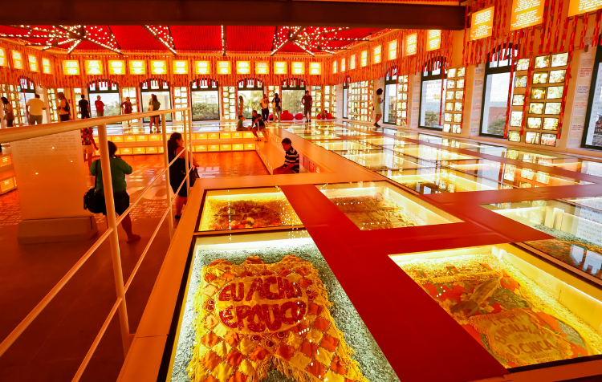

Paço do Frevo
O Paço do Frevo é um espaço cultural dedicado à difusão, pesquisa, lazer e formação nas áreas da dança e música do frevo localizado na cidade do Recife, capital de Pernambuco, Brasil. Surgiu através de uma parceria entre a Prefeitura do Recife, a Fundação Roberto Marinho, o IPHAN e o Governo Federal.
Centro Cultural Cais do Sertão
O Museu Cais do Sertão é um museu interativo sobre o Sertão e Luiz Gonzaga localizado na cidade do Recife, capital de Pernambuco, Brasil. Foi eleito um dos vinte melhores museus da América do Sul em 2015 pelos usuários do site de viagens TripAdvisor.